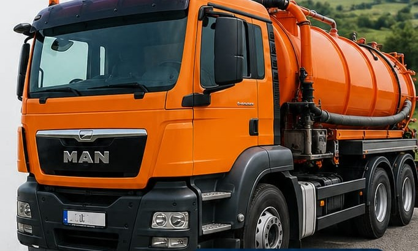

Curățenie. Siguranță. Profesionalism.
Vidanjare fose septice, bazine, puțuri și desfundare canalizare în Focșani și tot județul Vrancea.

În Focșani și tot județul
De încredere, la standarde
Utilaje moderne
Deșeuri gestionate corect
Golire și curățare fose septice, vidanjare bazine și puțuri, desfundare și decolmatare canalizare, transport ape uzate – pentru case, firme și instituții.
Fose septice, bazine, puțuri
Hale, depozite, separatoare
Școli, primării, spitale etc.
Desfundare, decolmatare, bazine
Ne deplasăm rapid în Focșani și în localitățile din jur. Dacă nu-ți vezi localitatea în listă, sună-ne – cel mai probabil ajungem și la tine.
Ne apelezi la 0721 757 495 și ne spui ce ai nevoie și unde.
Ne deplasăm cu mașina de vidanjări de 10 tone la adresa ta.
Vidanjăm rapid și curat, cu respect pentru proprietatea și mediul tău.
Partenerul tău de încredere pentru un mediu curat.
Sună acum 0721 757 495